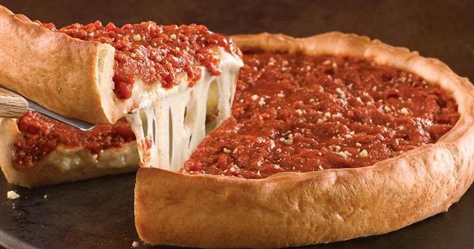

Making Chicago Style Pizza
Home

Description
So, what makes Chicago-style pizza so damn amazing? The answer is everything. Every little detail about this pizza is special.
First, this pizza clearly doesn’t look like a pizza you are used to. It’s baked in a deep dish cake pan. The cheese goes directly on top
of the crust and the sauce is piled on top. An upside-down pizza pie of sorts. Now, I may be completely wrong, but I’ve learned that the
proper way to eat Chicago-style pizza is with a fork. Is this right, Chicago readers? I hope so because it’s the only way I can eat it without
making an atrocious and very embarrassing mess.
The deep dish pizza crust. A crunchy-edged, flaky crust is key in Chicago-style pizza. It’s absolutely not a regular pizza crust. No, this crust
is unique. And that’s why I steered completely away from my regular pizza crust recipe and dove headfirst into something completely nuts. Adding
a little cornmeal. Cornmeal is what makes the crust so crunchy and flavorful. Not to mention, tasting like you’re eating the real deal.
Ingredients
Pizza Crust (makes 2)
- 3 and 1/4 cups (406g) all-purpose flour
- 1/2 cup (60g) yellow cornmeal
- 1 and 1/4 teaspoons salt
- 1 tablespoon (12g) granulated sugar
- 2 and 1/4 teaspoons (7g) Platinum Yeast from Red Star instant yeast (1 standard packet)
- 1 and 1/4 cups (300ml) slightly warm water
- 1/2 cup (8 Tbsp; 113g) unsalted butter, divided (1/4 cup melted, 1/4 cup softened to room temperature)
- olive oil for coating
Tomato Sauce for Both Pizzas
- 2 tablespoons (28g) unsalted butter
- 1 small onion, grated (about 1/3 cup)
- 3/4 teaspoon of salt
- 1 teaspoon of dried oregano
- 1/2 teaspoon crushed red pepper flakes
- 3 garlic cloves, minced
- one 28-ounce can (794g) crushed tomatoes
- 1/4 teaspoon granulated sugar
Toppings for Both Pizzas
- 4 cups (16 oz) shredded mozzarella cheese
- 1/2 cup (45g) grated parmesan cheese
- 1/2 cup sliced pepperoni
- 4 slices bacon, cooked and crumbled
Steps
- You will need two deep dish 9×2-inch round cake pans if you are making both pizzas at the same time. You can also use 9-inch
springform pans.
- For the crust: Combine the flour, cornmeal, salt, sugar, and yeast in the bowl of your stand mixer fitted with a dough hook attachment.
If you do not have a stand mixer, use your hand mixer and a very very large bowl. If you do not have any mixer, you will do this all by hand.
Again, use a very large bowl. Give those ingredients a quick toss with your mixer on low or with a large wooden spoon. Add the warm water
and 1/4 cup of melted butter. The warm water should be around 90°F (32°C). Make sure it is not very, very hot or it will kill the yeast.
Likewise, make sure the butter isn’t boiling hot. If you melt it in the microwave, let it sit for 5 minutes before adding. On low speed,
beat (or stir) the dough ingredients until everything begins to be moistened. Continuing on low speed (or remove from the bowl and knead by
hand if you do not own a mixer), beat the dough until it is soft and supple and gently pulls away from the sides of the bowl and falls off
of the dough hook- about 4-5 minutes. If the dough is too hard (it will be textured from the cornmeal), but if it feels too tough, beat in 1
teaspoon of warm water. Alternatively, if it feels too soft, beat in 1 Tablespoon of flour.
- Remove the dough from the bowl and form into a ball. Lightly grease a large mixing bowl with olive oil and place the dough inside, turning
it around so that all sides of the dough are coated in the oil. Cover the bowl tightly with aluminum foil and allow to rise in a warm
environment for 1-2 hours or until double in size.
- Once the dough is ready, lightly flour a large work surface. Remove dough from the bowl, set the bowl and aluminum foil aside (to use later).
Gently punch down the dough to remove any air bubbles and roll the dough into a large 15×12-inch rectangle. Spread 1/4 cup of softened butter
on top of the dough. Roll it up lengthwise per the photos below. Cut the dough log in half. Form the two pieces of dough into balls and place
back into your greased bowl. Cover with aluminum foil and allow to rise in the refrigerator (not in a warm place) for 1 hour until they are
puffy as you make the sauce.
- For the sauce: Place butter in a medium saucepan over medium heat and allow it to melt. Once melted, add the grated onion, salt, oregano, and
red pepper flakes. Once the onion has slightly browned after about 5 minutes, add the garlic, tomatoes, and sugar. Turn the heat down to
low-medium and allow it to simmer until it’s hearty, fragrant, and thick- about 30 minutes. You’ll have about 2 and 1/2 cups of sauce at this
point. If you have more than that, keep simmering until the amount has reduced. Remove from heat and set aside until ready to be used. You may
store the sauce in a tightly covered container in the refrigerator for up to 2 days if planning to make the pizza another day. You may freeze
this sauce for up to 2 months as well.
- Preheat oven to 425 F (218 C)
- Assemble the pizzas: After the dough balls have risen in the refrigerator, they should be puffy. Keep one ball of dough in the refrigerator as
you work with the first one. Roll it out on a lightly floured work surface, working it into a 12-inch circle. Using your rolling pin as a guide
(see photos below), place over a 9×2-inch deep dish cake pan. Using your fingers, press the dough into the cake pan. Make sure it is nice and
tight fitting inside the pan. Trim any excess dough off the edges with a small knife. Repeat with 2nd dough. Brush the top edges of the dough
with a little olive oil, which gives the crust a beautiful sheen. Fill each pizza with 1/2 of the cheese (about 2 cups/8 oz per pizza), then
the pepperoni and bacon or your desired toppings. Pour about 1 and 1/4 cups (300ml) of sauce evenly on top of each. If you do not like that
much sauce, you can reduce to 3/4 cup (180ml) per pizza and have leftover sauce. Sprinkle each with 1/4 cup (22g) of grated
parmesan cheese.
- Place the cake pans on top of a large baking sheet, which will catch anything potentially spilling over the sides of the pans. (Nothing usually
does.) Bake for 20-28 minutes or until the crust is golden brown. Feel free to loosely cover the pizzas with aluminum foil after the 15 minute
mark to prevent any heavy browning and uneven baking. Remove the pizzas from the oven and allow to cool in the pans placed on a wire rack for
10 minutes. After 10 minutes, slice, serve, and enjoy. Place any leftover pizza in an airtight container and refrigerate for up to 5 days.
Reheat leftovers in a 300°F (149°C) oven for 15-20 minutes or until hot.